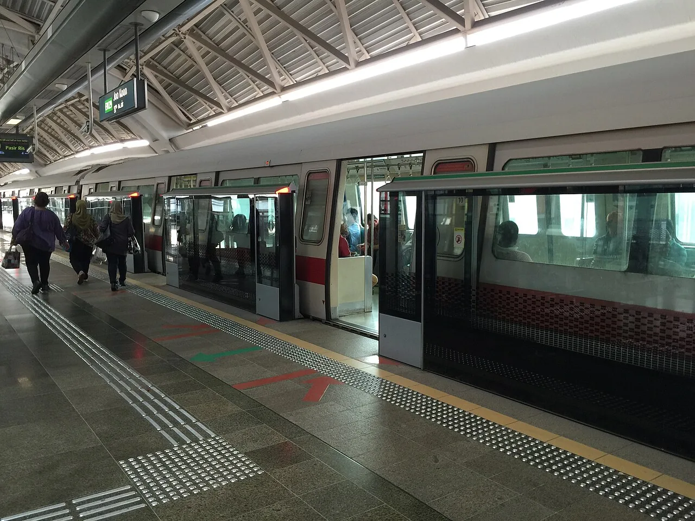
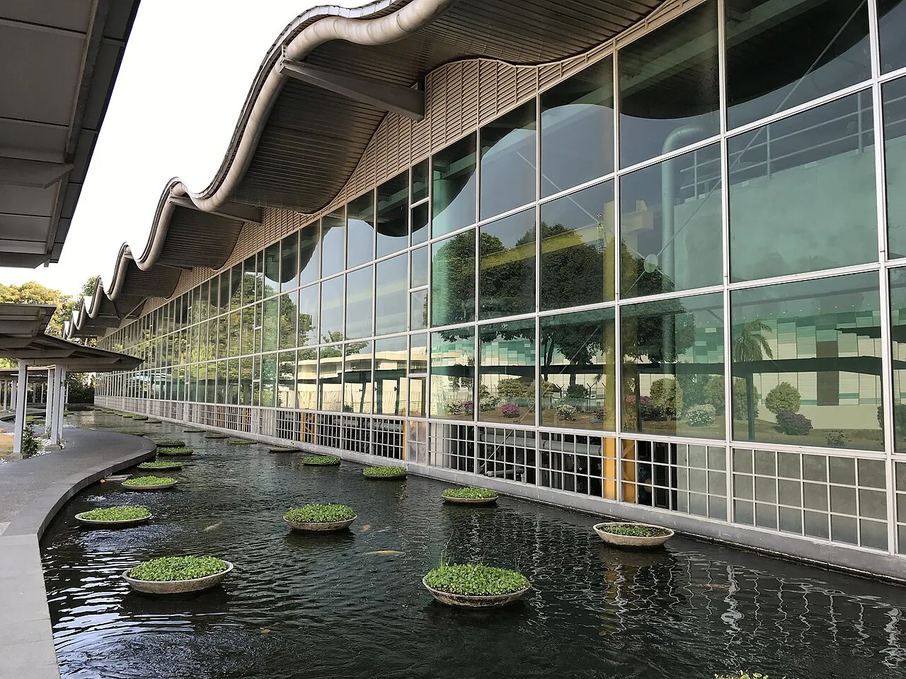
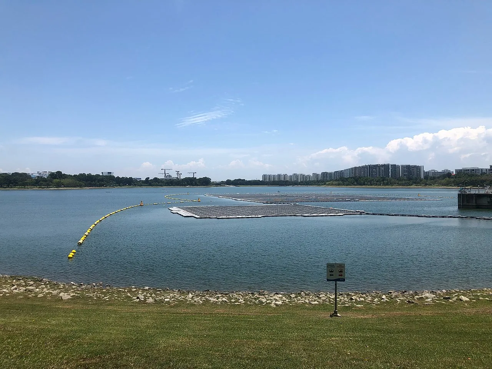

Calm, precise and premium. Best for building trust immediately.
 Talk to us
Talk to us
PROGRAMME CONTROLS & PROJECT INTELLIGENCE
Clarity for what comes next.
Major infrastructure moves on better decisions. Vertex brings schedule, cost, risk and project information into one clear view, so leaders can act with confidence.
to informed action.
Bold skyline imagery and a confident, restrained message.
Talk to us
THE INTELLIGENCE BEHIND INFRASTRUCTURE
See the whole.
Move with purpose.
When schedule, cost, risk and change connect, the next decision becomes clearer. Vertex gives complex programmes the control and intelligence to keep moving.
Talk to VertexVisualises the breadth of infrastructure with an analytical feel.
Talk to us
COMPLEX PROGRAMMES. CLEARER DECISIONS.
One clear view.
Every moving part.
We connect the disciplines, information and people behind major infrastructure, turning project complexity into a practical path forward.



Clarity across disciplines